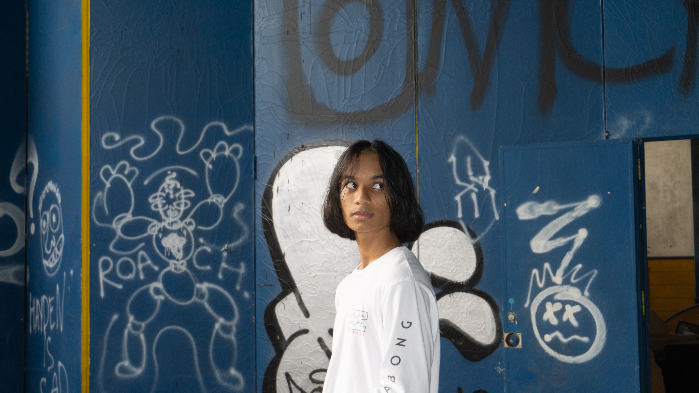

About Me

I am a self-driven and motivated 21-year-old Indian-American currently attending the Georgia Institute of Technology.
Through my studies and experiences, I have become proficient in numerous programming languages while also gaining experience in both Front-End and Back-End development. I've created and worked multiple projects. showcasing both in various programming languages.
In my free time, I actively participate in the cultural world around me, volunteering for various different projects and organizations, and even performing on stage in front of large crowds. I love tinkering with hardware, listening to (and creating!) music, and playing all types of sports (Go Jags!).
My ultimate goal is to work at a company that I feel utilizes my skillset in the best way possible, while also actively working to improve society and its foundations, both short-term and long-term.

Media Links
My Work
Florida Blue – GenAI Software Engineering Intern
May 2024 – August 2024
At Florida Blue, I had the opportunity to work on cutting-edge GenAI projects that enveloped the concepts of machine learning in healthcare. My primary focus was on enhancing the monitoring and evaluation of AI models deployed within the organization. I designed and implemented a comprehensive status page in Python that provided real-time monitoring for MLflow project models. This system was integral in tracking the performance of models like Llama3-70B, Llama2-7B, Mistral, and Llamaguard.
To ensure that these models were easily accessible and their statuses transparent, I developed a dynamic web interface using Gradio. This interface allowed visualization of uptime trends and statuses of various TGI (Tracking and Experimentation Interfaces) endpoints, which were crucial for the Retrieval Augmented Generation (RAG) pillar APIs.
Another achievement was implementing a custom PyFunc using EvalLog to track experiment durations. This logging capability provided comprehensive visibility across all code branches, capturing over 50,000 lines of data, which was pivotal in optimizing our data management workflows. Additionally, I developed a rehydrate method within MLflow, which streamlined the restoration of model states and experimental data, significantly enhancing the efficiency of our model recovery and deployment processes. This experience deepened my understanding of the complexities involved in managing large-scale AI deployments and the importance of robust monitoring systems.
GuideWell – Software Engineering Intern (Part-Time)
August 2024 – PRESENT
In my current role at GuideWell, I am focused on improving the deployment frameworks that support critical infrastructure applications within the GPT domain, ensuring that they are scalable and capable of production deployment without rollbacks
Another contribution I've made is integrating advanced data indexing techniques on OpenShift. This integration allows for PAAS indexing, ensuring seamless data integration with AWS Elastic Search.
NLP Logix – Data Science and Machine Learning Intern
June 2021 – August 2021
During my internship at NLP Logix, I delved into the world of data science and machine learning, applying these skills to real-world challenges in sports analytics. My primary project involved analyzing the NFL Play-by-Play dataset, which contained over 30,000 data columns. I used Tableau to create data visualizations that highlighted trends between pre-play properties and post-play results. These visualizations were not only informative but also interactive, allowing stakeholders to filter the data and uncover insights that were previously hidden.
Building on this analysis, I developed machine learning algorithms using Python and the Random Forest Classifier method. By carefully tuning parameters and splitting the data into training and test sets, I was able to create a predictive model with an ROC AUC score of 0.8, indicating that our model could predict play types (run or pass) with approximately 80% accuracy. This model was presented to the executive analytics teams at both NLP Logix and the NFL’s Jacksonville Jaguars. My presentation included discussions on feature importance, confusion matrices, and how our model could be used to anticipate play calls in future games. This experience was a significant milestone in my journey as a data scientist, combining technical rigor with real-world application.
FIRST Robotics – Team Resistance
August 2019 – April 2021
My involvement with FIRST Robotics was a transformative experience, where I honed my skills in both software development and teamwork. As a member of Team Resistance, I leveraged Java to develop software for an industrial-sized robot capable of executing complex field-based tasks. This wasn’t just about writing code, it was about understanding the mechanics of the robot, the dynamics of the competition, and how to optimize performance under pressure.
Our hard work paid off when we won the 2021 South Florida Regional Quality Award after competing against over 50 regional teams and 3,800 teams nationally. This achievement was the result of countless hours spent programming components, testing different configurations, and collaborating extensively with our executive coaches. The experience taught me the value of perseverance, collaboration, and the importance of iterative development in engineering projects.
Music Synthesizer – Interactive Web-Based Audio Plugins
June 2023 – May 2024
In this project, I designed a dynamic multimedia synthesizer that merges my passion for music with my technical skills. The synthesizer, developed using HTML and Python, generates audio with various processing effects that shape the character of the sound. I created an intuitive user interface using React and Angular, integrating the Tone.js library to allow users to manipulate audio directly on the webpage. This project has been my personal playground for experimenting with multimedia technologies, and it continues to evolve as I add new features and capabilities.
Song Mashup Generator – Song Match Optimizer
May 2022 – Present
This ongoing project has allowed me to embrace my love for both music and algorithmic problem-solving. I programmed an application using Python and the Spotify Web API to extract track features and generate optimal mashup combinations. The custom-logic heuristic algorithm I developed considers various parameters such as BPM, song key, and time signature, allowing users to find compatible song pairings. The ability to adjust parameter significance in song match rankings adds a layer of personalization, making the tool versatile for different users' preferences. This project not only showcases my programming skills but also my ability to create tools that enhance user experiences.